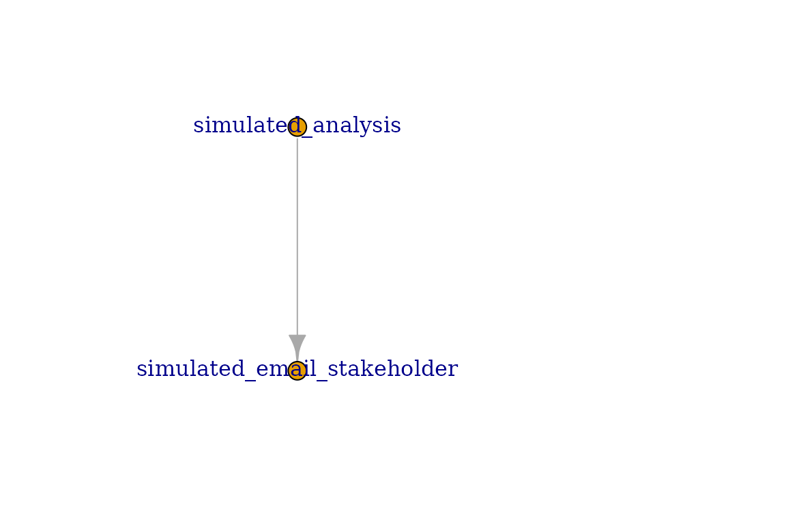
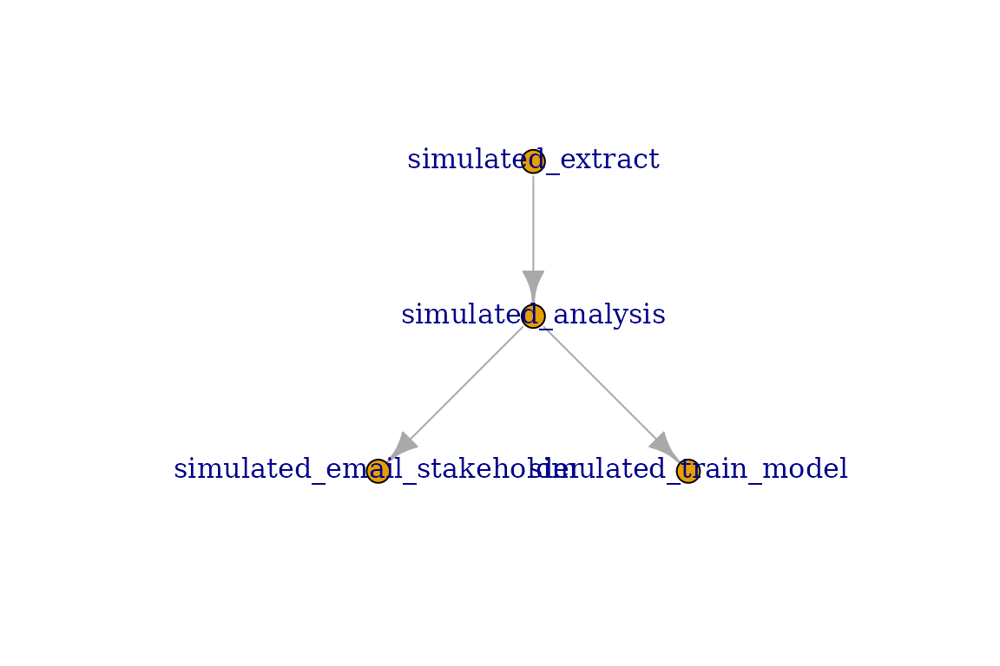
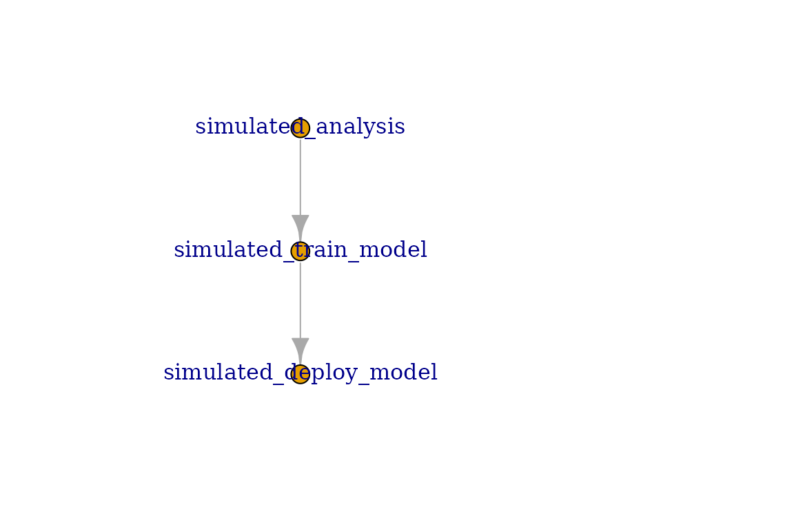
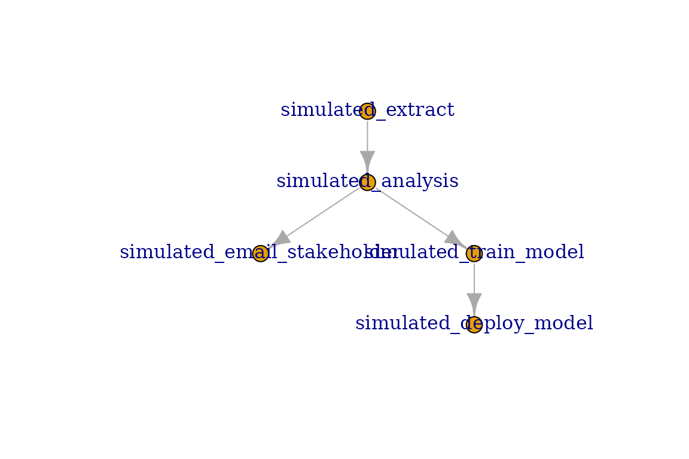
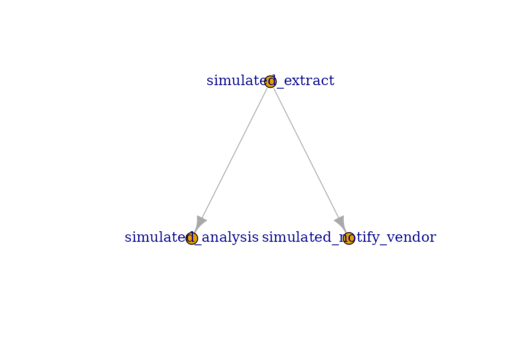

Connect Tasks
connect-tasks.RmdA Connect Task is any form of content published to Posit Connect that has the ability to be scheduled for a render. This includes content such as:
- Rmd
- Quarto
- Jupyter Notebooks
In out-of-the-box Posit Connect, these content items may be scheduled to run, or may be run on-command from the UI.
This package provides functionality to programmatically run these
tasks using triggers outside of the out-of-box experience. The
connectapi package provides the base functionality we need
to achieve this goal. This [connectapi.dag] package
provides simplified wrappers around these capabilities for the explicit
purpose of orchestrating these tasks ourselves.
Programmatically Run Tasks
Before we jump into full orchestration, let’s start simple. Let’s start with a single task the runs conditionally.
Normally, connect tasks are created by providing their content guid
as the first parameter to the connect_task function. For
this walk through, we’ll use simulated tasks instead, and give them
human-friendly names for simplicity’s sake.
library(connectapi.dag)
notify_task <- connect_task("email_stakeholder", simulated = TRUE)With our task defined, we can now simply call the
task_run function on it to execute the task. This may be
envoked from an existing job, from a Shiny application, or from an
API.
some_condition <- TRUE
if (some_condition) task_run(notify_task, verbose = TRUE)
#> Starting task email_stakeholder
#> Task SucceededStatuses
All connect tasks have a status. They may be accessed directly:
notify_task$status
#> [1] "Succeeded"There are 4 possible statuses a task may be in.
- Pending: Task has not run yet
- Succeeded: Task ran successfully without error
- Failed: Task encountered an error
- Skipped: Task did not meet criteria to run and has completed evaluation.
All newly created tasks start in the Pending status.
When a task is ran using the task_run function, it may
stop in any of the terminal statuses; Succeeded,
Failed, or Skipped. Once terminal, attempting to call
the task_run function again will result in an error.
In happy path, tasks will be in the Succeeded status after
evaluation. If an error is encountered while running the task, the task
will be in the Failed status. And if the preconditions for the
task are not met (defined in the trigger_rule parameter)
then it is Skipped.
All terminal statuses count as completing evaluation for the purposes of the Trigger rules.
Dependency Chains
Dependency chains are the foundation of DAGs in this package. Almost all of the heavy lifting for orchestrating DAGs is actually defined on the tasks.
In even simple data pipelines, you may decompose the steps of the analysis into three general steps; extract, transform, and load. Loading usually means storing the data, but may also be a final product or presentation.
Let’s consider our notify stakeholder task. This task is triggered when an analysis is complete and ready for them to view. The analysis task is a dependency of our notify stakeholder task. Therefore, we want to ensure the analysis task has completed before we attempt to run our notify stakeholder task.
This is when it becomes necessary to define our task dependency chain. What tasks must occur before we run? What preconditions should those tasks have for me to run? What tasks should occur after we run?
Tho define these dependency chains, this package offers the functions
set_upstream and set_downstream to define
dependency (run before) tasks and dependent (run after) tasks
respectively.
analysis_task <- connect_task("analysis", simulated = TRUE)
notify_task |> set_upstream(analysis_task)Now, our notify stakeholder task will only run after the
analysis task is complete. We can visualize this dependency
chain by using plot on any of the tasks. Note the the
plot function on a task will only show the immediate
dependencies and dependents.
plot(notify_task)
Dependency chains may grow exceptionally in complexity. This package offers a simplified interface to express these dependency chains and ensure their consistency.
extract_task <- connect_task("extract", simulated = TRUE)
analysis_task <- connect_task("analysis", simulated = TRUE)
notify_task <- connect_task("email_stakeholder", simulated = TRUE)
model_task <- connect_task("train_model", simulated = TRUE)
analysis_task |>
set_upstream(extract_task) |>
set_downstream(notify_task, model_task)
plot(analysis_task)
Extending Dependency Chains
Dependency chiains do not need to be a one-hop away. Dependency chains may be extended to any tree depth, and orchestrated using Connect DAGs in this packache.
However, plotting a single task will only display the immediate (one-hop) links. For example, we may have a final task after our modelling task is complete to update the model hosted in our plumber API.
reload_api_model <- connect_task("deploy_model", simulated = TRUE)
reload_api_model |> set_upstream(model_task)
plot(model_task)
Notice that when we plot the Model Task it does not include the extract nor the notify task. Only plotting DAGs will display the full dependency chain. Refer to the Connect DAGs vignette for more details.
my_dag <- connect_dag(extract_task, analysis_task, notify_task,
model_task, reload_api_model)
plot(my_dag, plotly = FALSE)
Trigger Rules
In many cases, there are conditions we want to ensure are met regarding upstream tasks. In most cases, you will want to ensure the upstream task(s) completed successfully before executing. However, there are many more possible situations where it is appropriate to run the task.
This is where Trigger Rules comes in. They allow you to control what upstream scenarios are acceptable as a precondition to running. The following trigger rules are provided:
- all_success: All upstream tasks executed successfully.
- all_failed: All upstream tasks failed during execution.
- all_skipped: All upstream tasks skipped execution.
- all_done: All upstream tasks completed evaluation. This includes skipped tasks.
- one_success: At least one upstream task executed successfully.
- one_failed: At least one upstream task failed during execution.
- one_done: At least one upstream task completed evaluation. This includes skipped tasks.
- none_failed: No upstream tasks failed. All other upstream tasks completed evaluation.
- none_skipped: No upstream tasks skipped. All other upstream tasks completed evaluation.
- always: Task will always run regardless of upstream task statuses.
By default, tasks use the all_success trigger rule. This may be changed when defining the task. For example, maybe we need to notify the data provider when there was an issue with the extraction step.
notify_vendor <- connect_task(
"notify_vendor",
trigger_rule = "all_failed",
simulated = TRUE
) |> set_upstream(extract_task)
plot(extract_task)
Now, we will only run the notify vendor task when there is a failure with the extraction step. Otherwise, it will be skipped.
Connect Validation
Note: all examples use simulated = TRUE
parameter for tasks to skip validation with a real Posit Connect server.
In actual usage, this value should be FALSE (the default)
instead.
When defining a Connect Task, you must specify the content guid, and access details to the Connect Server.
Access details are identical to those required by connectapi::connect(), as this is what is used under the hood. Most importantly, you should be using environment variables to manage the access details.
It is highly recommended to use the following environment variable,
as they are the default expected by this package, as well as
connectapi and pins.
CONNECT_SERVER = https://connect.example.com
CONNECT_API_KEY = your-api-key
task0 <- connect_task("be4e0fe3-ab35-4f07-bc8e-cd5d4a7b8452", simulated = TRUE)Of course, you may define your own options to these parameters as you desire.
task0 <- connect_task(
"be4e0fe3-ab35-4f07-bc8e-cd5d4a7b8452",
server = Sys.getenv("CONNECT_HOST"),
api_key = Sys.getenv("CONNECT_KEY"),
simulated = TRUE
)
task0
#> ConnectTask:
#> GUID: simulated_be4e0fe3-ab35-4f07-bc8e-cd5d4a7b8452
#> Name: be4e0fe3-ab35-4f07-bc8e-cd5d4a7b8452
#> Trigger Rule: all_success
#> App Mode: simulation
#> Status: Pending
#> Upstream Tasks: 0
#> Downstream Tasks: 0When using non-simulated tasks, the name of the task will be the title of the content on Connect.
Simulated Tasks
Simulated tasks are Connect Task environments that do not make any attempt to communicate with a Connect Server. They therefore skip validation with the server and assume the guid provided will also be the name of the task.
There are two ways to create simulated tasks. The simplest way is to
use the simulated = TRUE parameter when calling
connect_task(). Tasks created this way will also
immediately evaluate as Succeeded when you run
task_run() on it.
The second way is to use the sim_task() function. This
function does not have Connect access parameters, and adds an additional
parameter called fail_prob. This new parameter allows you
to define a random chance for the task to fail. The value is set between
0 and 1, where 0 is always fail, and 1 is always succeed.
connect_sim <- sim_task("some_task", fail_prob = 0.5)Tasks with a random chance to fail are useful when you want to see various scenarios of a DAG run. Outside of that use case, however, are otherwise useless.